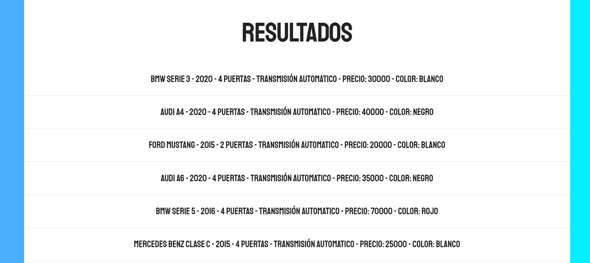
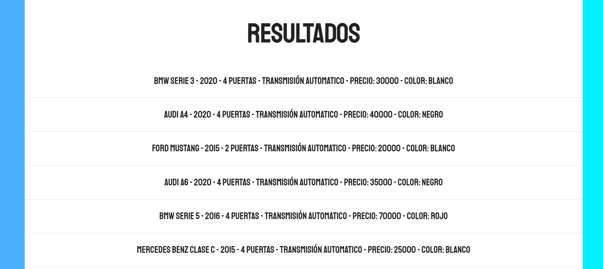

"La perseverancia y determinación son mis más fuertes cualidades. Soy capaz de mejorar y aprender a diario de mis victorias y mis errores con el objetivo de lograr mis metas."
"La perseverancia y determinación son mis más fuertes cualidades. Soy capaz de mejorar y aprender a diario de mis victorias y de mis errores con el fin de lograr mis metas."
"La perseverancia y determinación son mis más fuertes cualidades. Soy capaz de mejorar y aprender a diario de mis victorias y mis errores con el objetivo de lograr mis metas."
Mi nombre es Daniel Salgado, soy Ingeniero Industrial de la Universidad de El Salvador. Desde 2020 me he dedicado al Ecommerce en El Salvador con mi propia marca llamada FORSTORE, obteniendo muy buenos resultados con productos tecnologicos chinos (más de $45,000 USD en online sales Noviembre 2020 - Marzo 2022). Utilizando diferentes herramientas profesionales de Marketing Digital como Adobe Photoshop y Facebook ADS.
Soy una persona que le encanta seguir aprendiendo nuevas habilidades y he encontrado un área absolutamente genial en el desarrollo web Front-End. He trabajado en diferentes proyectos donde he aplicado mis conocimientos de estilos de CSS y también aplicaciones web con un contenido dinámico con JavaScript. Siempre muy emocionado y dispuesto a seguir aprendiendo nuevas tecnologías.
Es un proyecto propio de HTML, CSS y Javascript en el que se elaboró el diseño de un sitio web de noticias en honor a mi jugador favorito Lionel Messi. Para este proyecto se utilizaron conceptos como CSS GRID, Flexbox y una biblioteca llamada ScrollReveal. Sitio web responsive con @media querys.
Es un proyecto con una estructura inicial con HTML y CSS de una tienda de cursos en línea. Se agregó contenido dinámico con Javascript en el carrito de compras cuando se agrega un producto, elimina un producto o vaciar por completo el carrito de compras.Para este proyecto se utilizaron conceptos como Funciones, Eventos, Arreglos y LocalStorage para mantener el contenido del carrito aunque se refresque la página
Es un proyecto con una estructura inicial con HTML y CSS de un formulario. Se agregó contenido dinámico con Javascript en los campos del formulario cuando el cliente rellena datos. Los campos validan que el usuario ingrese correctamente todos los campos y un email válido para realizar un submit correctamente, si no, el submit no se habilita. Se utilizaron conceptos de funciones y eventos.
Portafolio web personal construido con HTML y CSS. Se utilizó librerias npm para agregar efectos al área de briefcase. Es un portafolio web responsive usando propiedades grid y flex.
 

Es un proyecto con una estructura inicial con HTML y CSS de un simulador de busqueda por filtros de una pequeña base de datos de autos. Se agregó contenido dinámico con JavaScript, al seleccionar una opción en cada etiqueta, en "Resultados" se irá filtrando información de autos que coincida con la opción seleccionada. Se utilizaron conceptos de objetos, métodos (método de filtro), funciones y eventos.
Es un proyecto con una estructura inicial con HTML y CSS de un cotizador de seguros. Hay contenido dinámico de Javascript que ayuda a obtener una cotización final de seguros según las condicionas del auto del cliente, para esto nos ayuda el condicional "Switch". También se utilizaron Prototypes que ayudan a asignar funciones exclusivas para constructores.

Es un proyecto con una estructura inicial con HTML y CSS de un control de presupuesto de gastos. Hay contenido dinámico de JavaScript que ayuda a agregar y eliminar gastos, controlando el presupuesto restante cada vez que se añade un nuevo registro. Se utilizaron conceptos de clases, constructores, y métodos. Una clase para leer los datos de la aplicación y otra clase que controla la User Interface.


Es un proyecto con una estructura inicial con HTML y CSS de un administrador de citas de una veterinaria. Hay contenido dinámico de JavaScript que ayuda a agregar y eliminar citas con datos de la mascota y de su dueño, teniendo el control del registro pudiendo editarlo o eliminarlo del DOM. Se utilizaron conceptos de objetos y funciones. También se aplicaron modulos para mostrar un mejor orden en el código.
Es un proyecto con una estructura inicial con HTML y CSS de un CRM para una empresa. Hay contenido dinámico de JavaScript que ayuda a agregar, eliminar y editar clientes. Se utilizaron conceptos de funciones y validación de formularios. Lo más importante es que utilizó la base de datos nativa de JavasCript IndexedDB para almacenar datos.